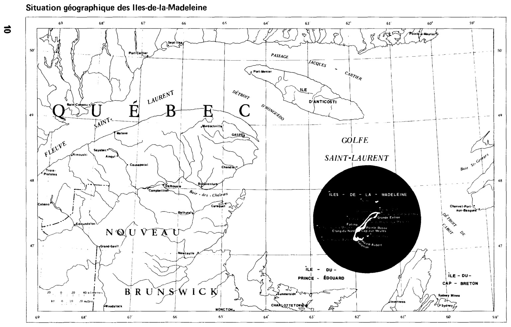

Les possibilités d'utilisation agricole des sols
Iles-de-la-Madeleine
Dépôt légal — Bibliothèque nationale du Québec
Les possibilités d'utilisation agricole des sols
Iles-de-la-Madeleine
Lauréan Tardif, agronome-pédologue
Contribution du Service de recherche en sols
Marton Tabi, agronome
Directeur
Direction générale de la recherche et de l'enseignement
Bertrand Forest, agronome
Directeur général
Agriculture
Québec
Québec
1978
Avertissement
Le lecteur à la recherche d'une description plus détaillée des sols est invité à consulter le bulletin technique no 13 du ministère de l'Agriculture du Québec : ''Pédologie des Îles-de-la-Madeleine'', 1964, du même auteur.
Le présent ouvrage met davantage l'accent sur leurs possibilités d'utilisation agricole, établies selon les critères et les normes du classement énoncés dans la publication 37-332 du MAQ, ''Classement des sols selon leurs possibilités d'utilisation agricole''.
La carte des possibilités d'utilisation agricole des sols, incluse en pochette ci-contre, constitue l'essentiel du présent document. Complète en soi, elle ne nécessite, par conséquent, qu'un minimum d'explications. Voilà pourquoi, délibérément, la notice explicative est concise et exempte de toutes les fioritures superflues. Elle ne vise qu'à situer le lecteur dans une juste perspective, évitant les interprétations erronées et favorisant le maximum d'informations. En somme, elle fournit un aperçu général de la région, une référence aux critères du classement des sols et quelques indications pertinentes à la lecture et l'intelligence de la carte.
Résumé
En bref, le classement des sols selon leurs possibilités d'utilisation agricole permet l'identification et la localisation des classes des sols, différenciées sur la base de critères physico-chimiques ayant une influence directe sur le niveau de la fertilité et, compte tenu de facteurs externes significatifs en agriculture, gênant le travail du sol et la croissance des plantes.
Suite au classement et à la cartographie des sols, la présente étude permet de constater que, sur le plan des possibilités d'utilisation agricole, les Îles présentent trois secteurs physiographiques, équivalents en superficie, mais nettement différenciés sur la base des possibilités agricoles, à savoir :
1. les dunes occupées par une végétation d'Elyme des Sables, de Gourbet et de joncs, d'aucune possibilité agricole;
2. les collines de formation volcanique, partiellement propres aux cultures et aux pâturages. Il est recommandé de maintenir les pentes fortes sous couvert végétal pour prévenir les effets de l'érosion, et compte tenu aussi de l'absence de profondeur du sol sur le roc par endroits. — (A noter que, contrairement aux terrains en friches de la région des Appalaches où l'on observe le reboisement naturel, les pacages naturels livrés à eux-mêmes fournissent encore un bon gazon après plusieurs années. Seules les zones continuellement abritées des vents ont tendance à retourner en forêt localisée dans les îles du Havre-Aubert, du Cap-aux-Meules et de la Grande-Entrée, en plus de l'île Brion, port d'attache pour la pêche aux "cages" (homards), occupée presque entièrement par une forêt de conifères) —;
3. enfin, le secteur d'influence marine offrant les meilleures possibilités pour les cultures grâce à la topographie plane. On y trouve surtout des sols légers recouvrant les formations de grès rouges, des alluvions récentes, des loams argileux et quelques sols organiques bien décomposés.
Les mesures antiérosives et l'apport de fertilisants et d'amendements sont recommandés dans le secteur des collines, classes 3e, 4f, 4g et 5g, tandis que l'augmentation de la matière organique et des apports de fertilisants et d'amendements calcaires seraient bénéfiques aux sols légers de la "plaine" classés 2b et 3b. De plus, les sols 4b et 4s, comportant un horizon induré, ne conviennent qu'à des cultures spéciales. Les alluvions occupant l'emplacement d'anciennes lagunes étroites, classées 1a, et les terres noires 02d ont une vocation pour les cultures maraîchères.
Somme toute, le présent document est un outil précieux en aménagement du territoire, pour le développement de l'agriculture et le choix des cultures conformément aux possibilités agricoles du milieu.

Chapitre 1
Aperçu général des Îles-de-la-Madeleine
— Localisation, étendue et description
L'archipel madelinien, situé en plein golfe du Saint-Laurent, à 160 milles (265 km) au sud-est de Gaspé et à 65 milles (110 km) au nord-est de l'Île du Prince-Édouard, est constitué en plus de certains îlots et rochers, de neuf îles principales dont huit sont habitées, et sept, reliées entre elles par les tombolos ou dunes de sable faisant le tiers de la superficie totale et n'offrant aucune possibilité agricole. Il épouse grossièrement la forme d'un hameçon totalisant une superficie de quelque 50 000 acres (20 000 hectares).
Les falaises de grès rouges, des roches sédimentaires sculptées par la mer, les collines aux formes arrondies, des roches volcaniques à l'origine du noyau central des îles, le gypse et l'argilite multicolore constituent, avec les barques de pêcheurs et les chalutiers mouillant dans les havres, les traits caractéristiques des îles. En effet, les Madelinots (13 000 habitants) — sont avant tout des enfants de la mer. La pêche, notamment celle aux homards, et la chasse aux loups marins font partie intégrante de leur mode de vie. Toutefois, la découverte récente des dômes de sel à Grosse-Île et leur exploitation sont susceptibles d'influencer sur tout le milieu madelinien.
— Accessibilité
Les Îles-de-la-Madeleine sont reliées à "la grande terre" par avion depuis Gaspé, Moncton et Charlottetown; et, par bateau, un traversier fait la navette entre les Îles et l'Île-du-Prince-Édouard.
Chapitre II
Agriculture et possibilités agricoles
- Agriculture
L'agriculture aux Îles est très peu développée. Il se pratique une agriculture artisanale explicable en partie par le morcellement des fermes. Du fait que l'industrie de la pêche constitue depuis toujours la principale activité, avec le temps, les lots ont été divisés permettant ainsi un partage entre les fils, pêcheurs tout comme le père. Ceci explique le morcellement de la ferme et la distribution originale des habitations sur le territoire. Il s'ensuit qu'aujourd'hui, les fermes ne présentent souvent qu'un lopin de terre d'à peine 25 acres (10 ha), non exploitées de façon optimale par surcroît.
- Climat et saison de végétation
Favorisée par le climat maritime, la saison de végétation est relativement longue. En effet, pour une période de 39 ans, la moyenne de jours sans gel s'établit à 161 jours, et la température de juillet à 17°C, pendant que l'humidité relative est de 85 pour cent pour la période de juin à septembre inclusivement.
- Les sols et leurs possibilités agricoles
En plus du climat, un autre facteur biophysique de première importance, à savoir le sol, joue un rôle primordial en agriculture. Les matériaux originels, c'est connu, ont une influence marquée sur les caractères des sols auxquels ils donnent naissance. Ainsi, par exemple, les sols résiduels développés aux dépens des grès rouges, bien que la topographie soit plane ou légèrement inclinée, présentent des limitations sérieuses pour la culture: la réaction est extrêmement acide, et le niveau de fertilité est très bas dû à la capacité d'échange cationique et au taux de saturation en bases très faibles, reliés à la texture sableuse qui leur confère un faible pouvoir de rétention d'eau. De plus, on observe la présence d'une couche indurée dans le solum responsable d'une nappe phréatique perchée temporairement, qui, avec le climat maritime où l'humidité relative se maintient à 85% atténue les effets de la sécheresse. En pédologie (1), ils se retrouvent dans les séries Fatima, Coffin, Corfu et Gros-Cap. Ils sont colonisés par l'épinette noire, la kalmia et la camarine noire. Il n'en demeure pas moins que certains, ceux défrichés, conviendraient à des cultures annuelles spéciales, moyennant l'apport généreux de fertilisants et d'amendements appropriés. Sur la carte, ils sont identifiés par les symboles 4b et 4s totalisant 5500 acres (2200 ha), comprenant des terrains en friche et des terrains boisés.
Par contre, les sols alluvionnaires (le loam argileux Belle-Anse) et ceux provenant de roches sédimentaires calcaires, schiste calcaire et argile (loams argileux Havre-aux-Maisons et Grand-Ruisseau), classés 1a, 2a et 3d, ont une très bonne valeur intrinsèque et, en position plane, ils présentent de très grandes possibilités agricoles, même si certaines aires, notamment à l'intérieur des sols de la série Grand-Ruisseau, bénéficieraient de travaux d'amélioration du drainage ou de la structure reliée à leur compacité. Ils totalisent 3250 acres (1300 ha).
Nonobstant la topographie ou les problèmes de pente par endroits, les loams Solomon, Aurigny et Le Bassin, classés 2a, 2e, 3e, 4f et 4g, sont de bonne valeur intrinsèque et, de ce fait, ils présentent de bonnes possibilités agricoles, tout au moins pour les pâturages là où ils ne prêtent pas aux cultures. Ils font quelque 5000 acres (2000 ha).
Les loams sableux profonds, friables et perméables, Lavernière, Anse-à-la-Cabane, Vigneault offrent de grandes possibilités aux cultures. La topographie est plane ou à micro-relief, et le drainage est bon comme c'est d'ailleurs pour la presque totalité des sols des Îles. Ils sont classés 2b et 3b pour 5720 acres (2315 ha), et se prêtent à toute une gamme de cultures moyennant l'apport de fertilisants appropriés. À noter toutefois leur réaction acide, ils bénéficieraient, par conséquent, d'une bonne application d'amendements calcaires (à moins qu'il ne s'agisse d'une culture acidophile) et d'enfouissement de matière organique.
Les sols organiques, en gris sur la carte, identifiés par le symbole 0, occupent quelque 880 acres (350 ha). De cette catégorie, les terres noires bien décomposées, 02d, suite à un drainage approprié, conviendraient aux cultures maraîchères au même titre que les loams argileux, riches en matière organique, de la série Belle-Anse, localisés dans des anciennes lagunes étroites et classers 1a, tel que mentionné précédemment. Le pH (5,9) est relativement élevé de même que la capacité d'échange cationique (64) et le pourcentage de saturation en bases (78%), autant de critères qui en font des sols à haut potentiel agricole.
Comme il est démontré, sur la base des facteurs du milieu bio-physique, les Îles offrent des possibilités agricoles intéressantes. L'optimalisation de la production contribuerait à un accroissement du niveau d'indépendance des Madelinots en denrées agricoles. La zone à vocation agricole représente 22 500 acres (9000 ha), grosso modo 50% de la superficie totale de l'archipel. La moitié conviendrait à toute une gamme de cultures tandis que le reste, à cause de facteurs tels la topographie fortement accidentée ou de la nature des sols, ne convient qu'aux pâturages ou à certaines cultures spéciales. Une autre zone équivalente en superficie est considérée d'aucune valeur agricole. Elle est constituée de collines abruptes et de dunes de sable occupées par une végétation de Gourbet, d'Elyme des sables et de joncs.
Chapitre III
Classement des sols selon leurs possibilités d'utilisation agricole
– Critères du classement
Qu'il suffise de mentionner que les critères fondamentaux du classement réfèrent à la nature du sol et à l'importance des travaux nécessaires à sa mise en valeur et à sa conservation. Les propriétés physiques et chimiques, qui influent sur le degré d'évolution pédogénétique et sur l'état de la végétation, sont considérées de première importance en tant que critères de base de la fertilité. A ces propriétés physico-chimiques se conjuguent les caractères externes du sol, tels le relief, la topographie, l'érodibilité, la profondeur utile, le drainage, la charge en cailloux, tous facteurs susceptibles de gêner ou d'entraver le travail du sol ou la croissance des plantes. "Ils peuvent donc, par leur nombre et par leur intensité, diminuer ou exclure complètement les possibilités de culture ou d'amélioration d'un sol donné.
"Ainsi un sol, d'une valeur intrinsèque donnée, peut être rangé dans une classe ou dans une autre, suivant la nature et l'importance des travaux ou mesures nécessaires à sa mise en valeur ''(2). Par exemple, un sol intrinsèquement de très bonne qualité, classé 1 sur la base des propriétés telles que la texture, la structure, la perméabilité, la réaction, la teneur en éléments nutritifs, la capacité d'échange, le pourcentage de saturation etc., localisé en relief accidenté ou en pente plus ou moins forte, se retrouve dans les classes d'utilisation agricole 2e, 3f et 4g tandis qu'un sol de valeur intrinsèque moyenne serait classé 3e, 5f, 5g ou 5h dépendant de la rigueur de la pente et des mesures antiérosives à appliquer. La même règle s'applique dans le cas des problèmes de drainage, c'est-à-dire que la classe d'utilisation agricole est décalée pour un sol mal drainé par rapport à un sol de même valeur intrinsèque ne présentant pas de problème de drainage, 2d par rapport à 1a.
Au niveau du classement et de la cartographie, le système permet de distinguer différentes aires interprétées en termes de possibilités d'utilisation agricole: d'une part, les sols agricoles propres, peu propres et impropres à la culture et, d'autre part, les terrains non agricoles. Les sols organiques faisant l'objet d'un groupe distinct.
Chapitre IV
La carte des possibilités d'utilisation agricole des sols
Concrètement, la carte des possibilités d'utilisation agricole des sols est le résultat de la transposition, sur un plan à l'échelle, des différentes classes de sols identifiés et localisés sur le terrain. La légende présente le potentiel spatial brut, décrit et mesuré pour chaque unité cartographique à l'intérieur des municipalités.
– Lecture de la carte
La zonation par la couleur facilite une lecture rapide de la carte : deux couleurs de base, le jaune orange et le vert, identifient respectivement les classes 1 et 6. La dégradation du jaune orange signifie une diminution de la valeur des sols à culture, tandis que la gradation du vert, des classes 4 à 6, représente un accroissement des risques de culture et des difficultés de mise en valeur des sols de qualité intrinsèque moindre qui, à la limite, traduisent l'absence de toutes possibilités agricoles. Le gris représente les sols organiques symbolisés par la lettre O.
À l'échelle utilisée (50 000e), compte tenu de la nature des sols et de la complexité du paysage, il n'est pas toujours possible de cartographier chaque classe d'utilisation séparément. C'est pourquoi elles sont souvent représentées en complexe ou association géographique (2a-3e-5f). La classe dominante figure en premier lieu et décide du choix de la couleur.
– Symbolisation
La symbolisation de la classe de possibilités d'utilisation agricole consiste en un chiffre auquel est accolée une lettre référant à la nature des mesures ou travaux recommandés. Elle est un bon indicateur pour le choix des cultures conformément aux possibilités agricoles des sols. Ainsi, par exemple, le symbole 2b indique un besoin de fertilisants et d'amendements pour de hauts rendements sur des sols friables, perméables, bien drainés et de qualité ou de valeur intrinsèque généralement bonne alors que 3b et 4b sont utilisés pour des sols de valeur intrinsèque moyenne et médiocre; la lettre d est utilisée où le drainage est recommandé; les lettres e, f et g, pour la gradation des mesures antiérosives préconisées; et s, pour souligner un problème de structure ou de compacité. La lettre "a" est réservée aux sols de bonne et de très bonne qualité ne présentant aucun problème particulier pour la culture, v.g. 2a et 1a, (Annexe I).
Références
- Tardif, L., Pédologie des Iles-de-la-Madeleine. Ministère de l'Agriculture, Québec, 1967.
- Mailloux, A., A. Dubé et L. Tardif. Classement des sols selon leurs possibilités d'utilisation agricole. Pub. 37-332. Ministère de l'Agriculture du Québec.
Annexe I
Légende des classes de possibilités d'utilisation agricole des sols
Îles-de-la-Madeleine
| Catégories | Superficies | |
|---|---|---|
| acres | hectares | |
| ZONES AGRICOLES | 22 459 | 9 090 |
| A) Sols aptes aux cultures | 12 675 | 5 130 |
| Qualité très bonne | 1 064 | 430 |
Classes et Description et recommandations
| Qualité bonne | 8 738 | 3 536 |
| 2 873 | 1 163 | ||
|---|---|---|---|
| 3b | Sols de qualité moyenne, texture sableuse, pauvres en matière organique et niveau de fertilité peu élevé; bien drainés et topographie plane. Amendements et fertilisants recommandés à doses fortes ou fréquentes. | 2 216 | 897 |
| 3s | Sols de qualité moyenne, texture légère et topographie plane. Une couche indurée à 40 cm de la surface entrave la circulation normale de l’eau dans le sol et la pénétration des racines en profondeur. Une amélioration de la structure et l’apport d’amendements et de fertilisants sont recommandés. | 481 | 195 |
| 4d | Sols de qualité moyenne, nécessitant des travaux d’égouttement. | 64 | 26 |
| 4e | Sol de qualité moyenne, texture de loam sableux, en pente de 5 à 10%. Mesures simples contre l’érosion et apports d’amendements et de fertilisants recommandés. | 112 | 45 |
| B) | Sols peu aptes aux cultures, à réserver à certaines cultures spéciales. | 5 417 | 2 192 |
| 4b | Sols de qualité médiocre, sableux, pauvre en matière organique, à très bas niveau de fertilité, et fortement acides. Topographie plane. Très bon drainage. Amendements et fertilisants selon les exigences des cultures. | 188 | 76 |
| 4s | Sols de qualité médiocre, sableux, niveau de fertilité très bas et fortement acides. Topographie plane. La présence d’un horizon cimenté à 25 cm de la surface crée des conditions défavorables pour la culture. Ne convenant qu’aux plantes à racines superficielles et moyennant des apports d’amendements et d’engrais appropriés. Végétation naturelle : épinette noire, kalmia et camarine noire. | 5 229 | 2 116 |
| C) | Sols inaptes aux cultures, à réserver aux prairies et pâturages | 4 367 | 1 767 |
| 3f | Sols de très bonne qualité, en pente de 10 à 20%. Nécessitant des mesures importantes contre l’érosion, telles que le labour et la culture en contre-sens de la pente. | 216 | 87 |
| 4f | Sols de bonne qualité, en pente de 10 à 20%. Mesures importantes recommandées contre l’érosion. | 1 822 | 737 |
| 5f | Sols de qualité moyenne, en pente de 10 à 20%. Mesures contre l’érosion et fertilisation recommandées. | 128 | 52 |
| 5mf | Sols de qualité moyenne, minces sur roc, et topographie accidentée. Mesures antiérosives recommandées. | 48 | 20 |
| 4g | Sols de très bonne qualité, pente raide supérieure à 20%. Labour en contre-sens de la pente, repos prolongé du sol. Maintenir sous couvert végétal. | 1 466 | 593 |
| 5g | Sols de bonne qualité, topographie complexe et pente supérieure à 20%. Labour en contre-sens de la pente, repos du sol par une rotation longue. Maintenir sous couvert végétal. | 687 | 278 |
ZONES NON AGRICOLES
| 25 492 | 10 316 | ||
|---|---|---|---|
| 5h | Terrains fortement accidentés; sols minces sur roc; pentes raides et complexes. Maintenir sous couvert végétal. | 2 314 | 936 |
| 6 | Terrains boisés à conserver sous couvert forestier. | 3 172 | 1 284 |
| 6v | Terrains fortement accidentés et boisés. Conserver sous couvert forestier. | 1 604 | 650 |
| 6s | Dépôts éoliens, dunes de sables occupées par la végétation maritime, élyme des sables et gourbet. Drainage excessif et relief très prononcé. | 12 364 | 5 004 |
| 6si | Terrains plats et gorgés d'eau, sables de plages, tombolos et dépôts organiques localisés immédiatement au-dessus du niveau de la mer et fréquemment inondés. La végétation est constituée de joncs. | 6 038 | 2 444 |
SOLS ORGANIQUES
| 884 | 358 | ||
|---|---|---|---|
| 02d | Terre noire bien décomposée et profonde (+ 60 cm). Drainage défectueux. Valeur agricole très élevée moyennant un drainage adéquat. | 332 | 134 |
| 03d | Terre noire moyennement décomposée et profonde. Mal drainée. Bonne valeur agricole. | 252 | 102 |
| 04d | Matière organique peu décomposée et mal drainée. | 144 | 58 |
| 04dm | Matière organique peu décomposée, mince sur sol minéral, fortement acide. Drainage défectueux. | 156 | 63 |
ANNEXE II
| PAROISSES | ZONE AGRICOLE (22,459 acres) | ZONE NON AGRICOLE (25,492) |
SOLS ORGANIQUES (884) |
TOTAL | ||||
|---|---|---|---|---|---|---|---|---|
| Sols à culture (12,675) | Sols à pâturages (4,367) |
Sols à cultures spéciales (5,417) |
||||||
| Très bons | bons | moyens | ||||||
| Ile d'Entrée | 88 | 124 | 64 | 574 | 186 | 1,036 | ||
| Havre-Aubert | 24 | 632 | 318 | 598 | 2,302 | 304 | 4,178 | |
| Le Bassin | 562 | 1,940 | 308 | 967 | 880 | 3,807 | 280 | 8,744 |
| Lavernière | 116 | 1,920 | 526 | 400 | 1,086 | 2,476 | 24 | 6,548 |
| Fatima | 258 | 992 | 520 | 748 | 992 | 3,245 | 200 | 6,955 |
| Cap-aux-Meules | 506 | 82 | 144 | 76 | 808 | |||
| Havre-aux-Maisons | 16 | 1,386 | 560 | 566 | 936 | 3,310 | 6,774 | |
| Pointe au Loup | 125 | 125 | 1,600 | 1,850 | ||||
| Grosse Ile | 266 | 20 | 166 | 16 | 1,552 | 2,020 | ||
| Ile de l'Est | 8 | 132 | 8 | 188 | 4,644 | 4,980 | ||
| Grande Entrée | 100 | 300 | 700 | 596 | 1,578 | 3,274 | ||
| Ile Brion | 864 | 156 | 648 | 1,668 | ||||
| TOTAL | 1,064 | 8,738 | 2,873 | 4,367 | 5,417 | 25,492 | 884 | 48,835 |